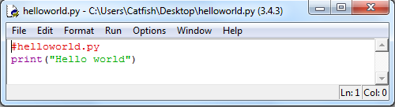

Основы языка Python / Jython
Создание скрипта и его запуск.
создайте файл helloworld.py со следующим скриптом

Чтобы выполнить скрипн нужно ввести команду в консоли или просто дважды щёлкнуть на файле скрипта.

Переменные
stroka = "Hello world!" # переменная текст
year = 2015 # переменная целое число
money = 100.05 # переменная дробное число
print(stroka, year, money) # отобразить на экране
Арифметические выражения
num1 = 25.05; num2 = 3; num3 = 0.5;
result = num1 * num3 / num2;
print(result); # результат 4.175
Строки
объявление переменных содержащих строку текста
a = "Привет Мир!";
b = 'Программирую на Python';
c = """Компьютер говорит 'нет'""";
получить символ в строке
a = "Привет Мир!";
b = a[4]; # результат буква “e”
чтобы извлечь подстроку к строке обращаются используя оператор сечения [i:j]
a = "Привет Мир!";
b = a[0:6];
print(b); # результат “Привет”
c = a[7:];
print(c); # результат “Мир!”
Преобразование значений
преобразовать строку в число с помощью функций int() или float()
a = "37";
b = "25.5";
c = int(a) + float(b);
print(c); # результат 62.5
преобразовать число в строку с помощью str(), repr() или format()
num = 37.3;
stroka = "Значение: " + str(num);
print(stroka); # результат 37.3
stroka = "Значение: " + repr(num);
print(stroka); # результат 37.3
stroka = "Значение: " + format(num, "4f");
print(stroka); # результат 37.300000
Списки
Списки - это последовательности произвольных объектов.
пустой список
names = [];
name = list();
получить данные списка
names = ["Dave", "Mark", "Ann", "Phil"];
a = names[2];
print(a);
# результат Ann
изменить данные списка
names[0] = "Jeff";
b = names[0];
print(b);
# результат Jeff
добавление нового элемента в конец списка
names.append("John");
вставить элемент в середину списка
names.insert(2, "Thomas");
извлечение и изменение целого фрагмента
b = names[0:2];
c = names[2:];
names[1] = ‘Jeff’;
names[0:2] = [‘Dave’, ’Mark’, ’Jeff’];
конкатенация списков
a = [1,2,3]+[4,5];
вложенные списки
a = [1, “Dave”, 3.14, [“Mark”, 7, 9, [100, 101]], 10];
a[1]; # результат Dave
a[3][2]; # результат 9
a[3][3][1]; # результат 101
Кортежи - Предназначен для создания простейших структур данных.
объявление
address = (‘www.python.org’, 80);
получение данных из структуры в переменные
host, port = address;
Множества - используются для хранения неупорядоченных коллекций объектов
создание
s = set([3, 5, 9, 10]);
t = set(“Hello”);
добавление элементов
t.add(‘x’);
s.update([10, 37, 42]);
удаление элементов
r.remove(‘H’);
Словари - это ассоциативные массив
создание
stock = {};
stock = dict();
stock = {
“name” : “CAR”,
“shares” : 100,
“price” : 4900.10
}
доступ к элементам
name = stock[“name”];
value = stock[“shares”] * stock[“price”];
добавление и изменение
stock[“date”] = “June 7, 2007”;
stock[“shares”] = 75;
получить список ключей словаря
syms = list(stock);
удаление элементов словаря
del stock[“shares”];
Итерации и циклы
пример итерации
for n in [1,2,3,4,5,6,7,8,9]:
print(n);
сокращённая форма записи
for n in range(1, 10):
print(n);
вывести отдельные символы в строке
a = "Hello!";
for c in a:
print(c);
вывести элементы списка
b = ["Dave", "Mark", "Ann", "Phil"];
for name in b:
print(name);
вывести элементы словаря
c = {'GOOG' : 49.10, 'IBM' : 91.50};
for key in c:
print(key, c[key]);
вывести все строки из файла
f = open("script.py");
for line in f:
print(line);
Функции
возврат одного значения
def remainder(a, b):
r = a * b;
return r;
print(remainder(5, 5));
возврат нескольких значений с помощью кортеж
def remainder(a, b):
r1 = a * b;
r2 = b / a;
return (r1, r2);
R1, R2 = remainder(7, 6)
print(R1, " : ", R2);
переменная со значением по умолчанию
def remainder(hostname, port=8888):
print("HOST: ", hostname, " PORT: ", port);
return ("OK");
print(remainder("http://"));
процедура изменяющая глобальную переменную
count = 0;
def foo():
global count;
count += 1;
foo();
print(count);
Условные операторы
Для простых проверок можно использовать инструкцию if и else
a = 10; b = 5;
if (a < b):
print("А меньше Б");
else:
print("А больше Б");
для сравнения используются следующие символы:
< меньше
<= меньше или равно
> больше
>= больше или равно
== равно
!= не равно
чтобы создать пустое тело, не выполняющее никаких действий можно использовать инструкцию pass
if (a < b):
pass # не выполнять никаких действий
else:
print("А больше Б");
Условия с использованием булевых выражений or, and и not
product = "game";
target = "mob";
year = 2015;
if (product == "game") and (target == "mob") and not (year < 2014 or year > 2015):
print("Это наша игра");
else:
print("Это не наша игра");
Сложные условия. В Pyhton отсутствуют инструкции switch или case, и чтобы выполнить проверку на соответствие нескольких значений используется elif
fileType = ".jpg";
if(fileType == ".bmp"):
print("Файл bmp");
elif(fileType == ".jpg"):
print("Файл jpg");
elif(fileType == ".png"):
print("Файл png");
else:
raise RuntimeError("Файл неизвестного типа");
Для определения истинности используется значение True и False типа Boolean
s = 'spam';
if ('spam' in s):
has_span = True;
else:
has_span = False;
print(has_span);
Генераторы
Created with the Personal Edition of HelpNDoc: Produce electronic books easily